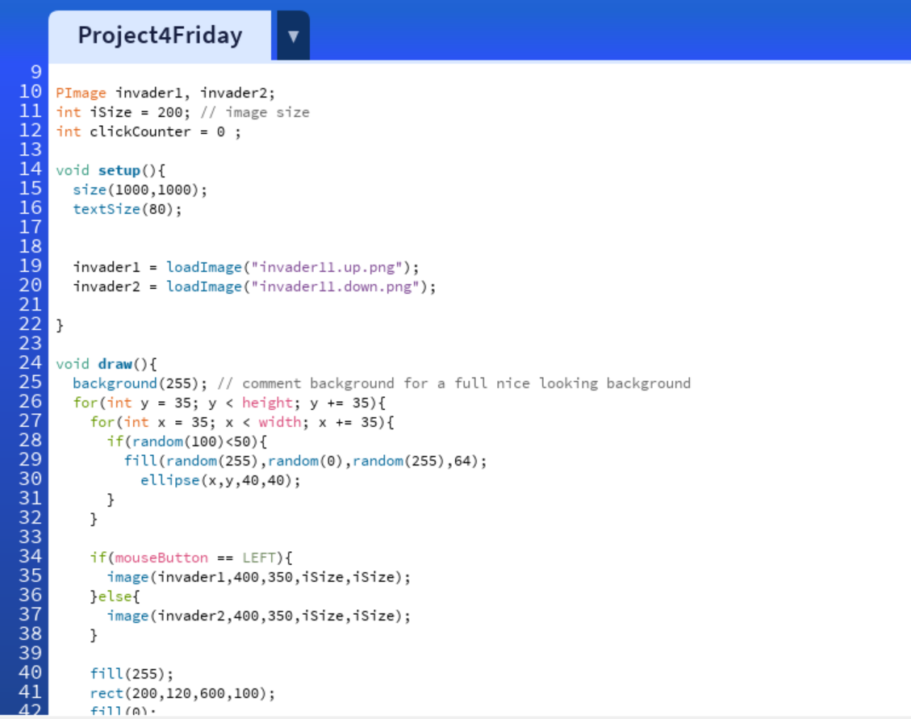
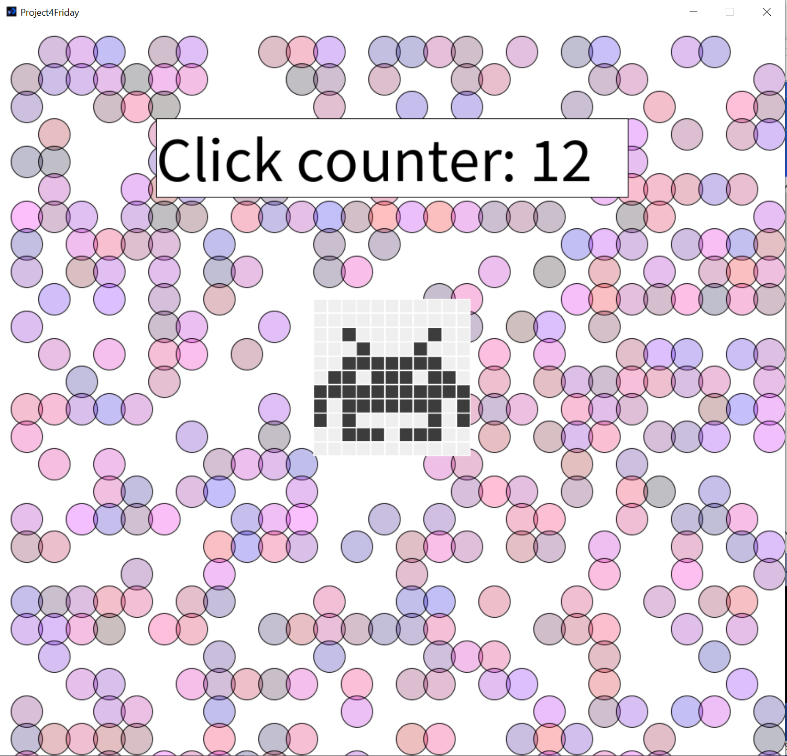
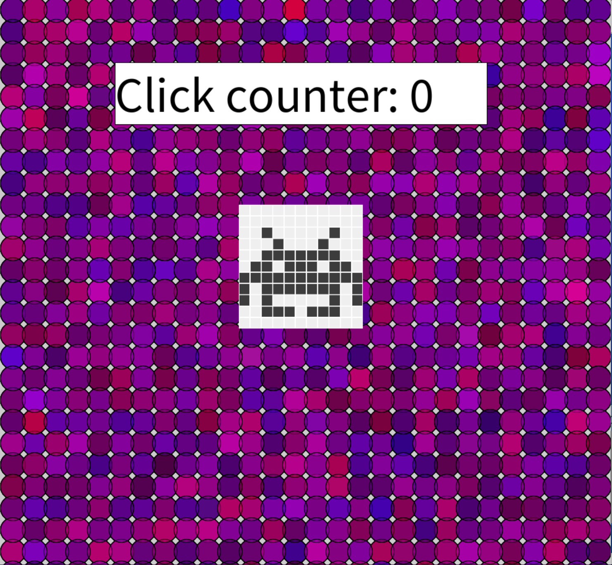
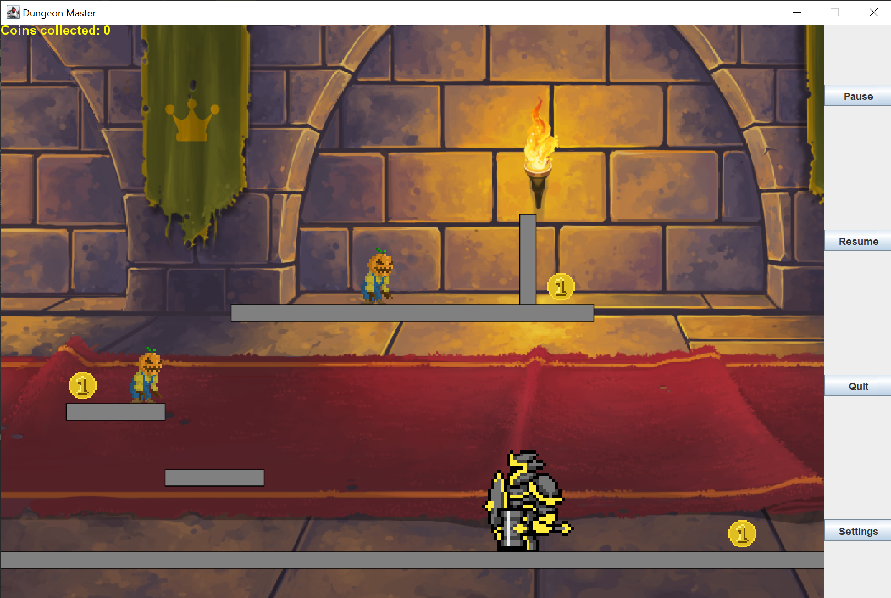
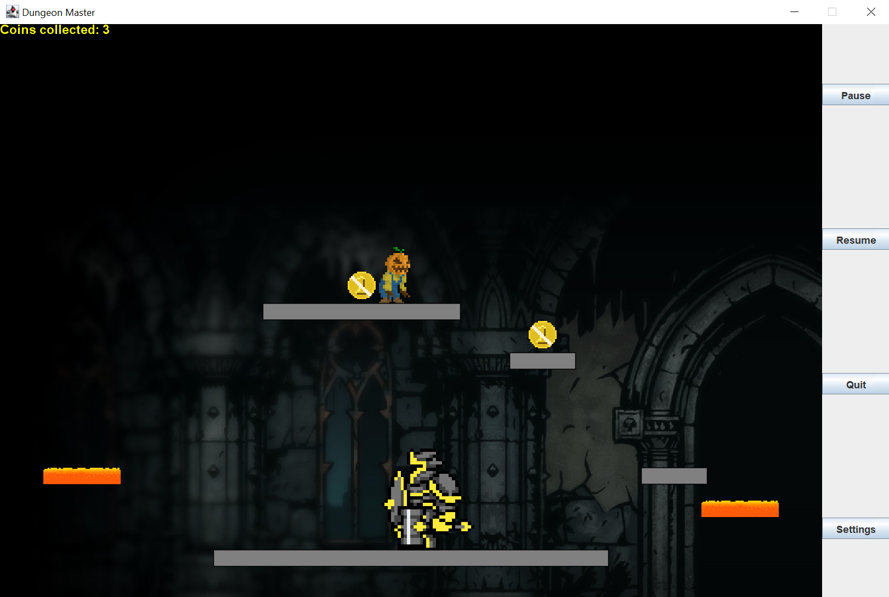

Alican KaplanI have some previous programming experience. For my A-levels I was coding in Python. I have programmed in Java in Visual Studio Code prior to the bootcamp to see how I would find switching from programming languages. I would like to pursue a career within Computer Science but I'm currently not sure which area I would like to specialise in. |
||
|
|
||
Bootcamp 2021:My first programming project in Java. I started with an image and then used loops to construct a background which illustrated a pattern of circles covering the sketch. I used randomness when colouring the circles. I also used interaction to create a click counter to record the number of clicks on the sketch. I also incorporated if-else statements and loops to be able to allow the image to switch from up and down based on the users' mouse interactions. I also used keyboard inputs. Check out the code on Github: https://github.com/AlicanK-code/bootcamp_project | ||



Java Project 2022:My second programming project in Java. I began with the city engine provided for this module and decided to work my way up. Making bodies, adding movement and projectiles, incorporating different levels into my game and adding a GUI. I've really enjoyed working with collisions during this project as it gave me a better understanding of the distinguishment between different bodies. |
  | |